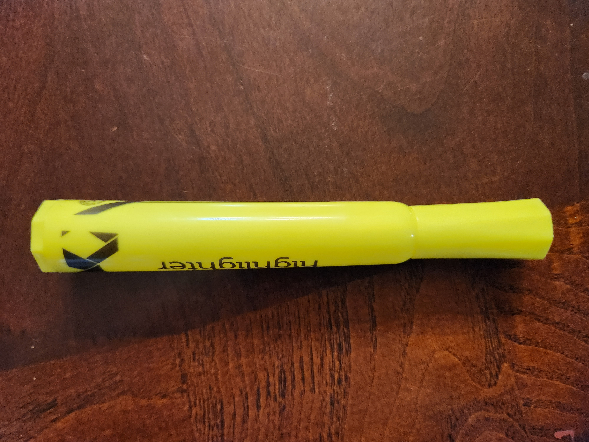

I have tested 10 images..
GOOGLE LENS predicted 9 of them more accurately And MobileNet was less accurate with only 1.
So according to my case study, GOOGLE LENS is more accurate than MobileNet.
1.Test Image
Output on GOOGLE LENS -
Coca Cola
Output on MobileNet Model -
Water Bottle
Result -
MobileNet is more accurate.
2.Test Image
Output on GOOGLE LENS -
Large Pink Pearl Eraser
Output on MobileNet Model -
Band Aid
Result -
Google Lens is more accurate.
3.Test Image
Output on GOOGLE LENS -
Elama Home 30 Piece Biodegradable Suit Hangers
Output on MobileNet Model -
hook, claw
Result -
Google Lens is more accurate
4.Test Image

Output on GOOGLE LENS -
Yellow Chisel Tip Highlighter
Output on MobileNet Model -
highlighter
Result -
Google Lens is more accurate.
5.Test Image
Output on GOOGLE LENS -
Threshold Oval Mirror Brass Double Sided Magnified
Output on MobileNet Model -
loupe, jewelers loupe
Result -
Google Lens is more accurate.
6.Test Image
Output on GOOGLE LENS -
Logitech M310 Wireless Mouse
Output on MobileNet Model -
Mouse, Computer
Result -
Google Lens is more accurate.
7.Test Image
Output on GOOGLE LENS -
Vintage Southern California Gas Company Pencil
Output on MobileNet Model -
Matchstick
Result -
Google Lens is more accurate.
8.Test Image
Output on GOOGLE LENS -
Fiskars Pointed-Tip Kids Scissor 5 inch Blue
Output on MobileNet Model -
Stethoscope
Result -
Google Lens is more accurate.
9.Test Image
Output on GOOGLE LENS -
Swingline Optima 40 Desk Stapler Reduced Effort 40 Sheets Silver
Output on MobileNet Model -
Blow drier
Result -
Google Lens is more accurate.
10.Test Image
Output on GOOGLE LENS -
Case-Mate Double Sided Tape